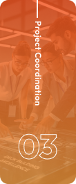

Program Manager
Merencanakan, mengkoordinasikan, dan memastikan seluruh program edukasi serta acara sosial organisasi berjalan lancar, efektif, dan berdampak positif bagi peserta. Dalam konteks organisasi sosial atau panti asuhan, Program Manager bertanggung jawab untuk merancang kegiatan yang tidak hanya menghibur, tetapi juga mendidik dan memberdayakan anak-anak, remaja, atau kelompok masyarakat yang menjadi target program. Peran ini membutuhkan kemampuan manajemen proyek, komunikasi yang baik, kepemimpinan tim, serta kepekaan sosial yang tinggi.
Skills
